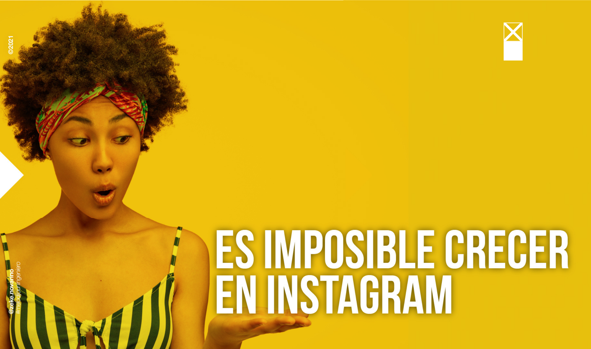
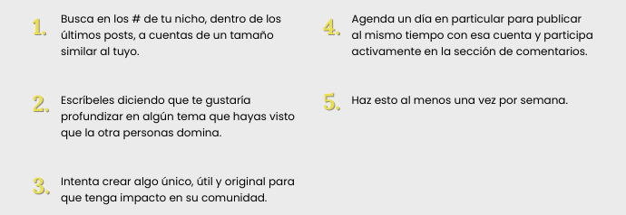
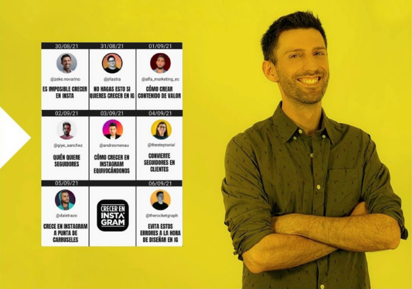

Es imposible crecer en instagram
Por Zeke Novarino | Instagram Mentor
Ocutubre 2021
Si ya te cansaste de probar cosas y comprobar que es
imposible crecer en Instagram este artículo es para ti.

Al contrario de lo que muchos pueden pensar, hacer acciones con personas que son tu "competencia" puede ser algo súper constructivo. De hecho, cuando dejamos de ver a los demás como competencia hay todo un mundo detrás lleno de cosas buenas esperándote.
Por eso, nunca dudé en apoyarme y apoyar a personas que también acompañan a cuentas que quieren crecer orgánicamente. Cada quien tiene su estilo y su particularidad y, créeme cuando te digo que si tienes en claro tus puntos fuertes, sabrás atraer a aquellos a los que mejor puedes ayudar y acompañar a los que no para que vayan en buenas manos.
¿Por qué es difícil crecer en Instagram?
Es que por segundo se suben más de 60.000 fotos, imagina el número sumando otros fomatos. Esa cantidad de competencia hace que sea casi imposible que logremos alcanzar gente nueva. Siguiendo tendencias logramos exposición pero esas personas muchas veces no se suman a la comunidad. Lo mismo pasa incluso invirtiendo en publicidad
Entonces, ¿cómo lo hacemos?
Hay dos cosas a tener en cuenta
- Entender que el crecimiento en seguidores pero no en comunidad no sirve para nada.
- Entender que solos no llegamos lejos en una red social
Por eso, te recomiendo que hagas lo siguiente para crecer de verdad:
Mi propia experiencia de colaboración
Te comparto una mega colaboración de crecimiento orgánico que tuve el honor de inaugurar. Quiero recomendarte que visites estos perfiles de grandes mentores para aprender a seguir creciendo:
Primero crecemos como personas, luego como profesionales y después como negocio. El camino es más divertido si lo hacemos juntos
Te espero en mi Instagram para saber qué parece hacer una acción así con otras personas de tu nicho.